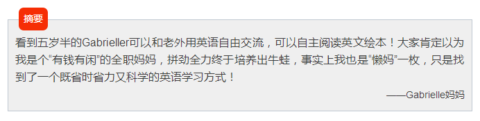
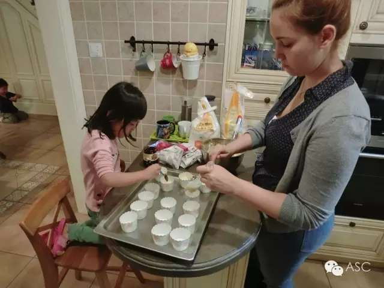
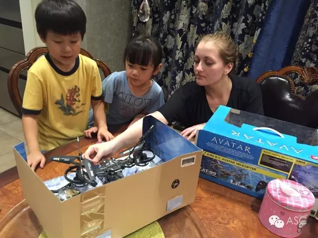
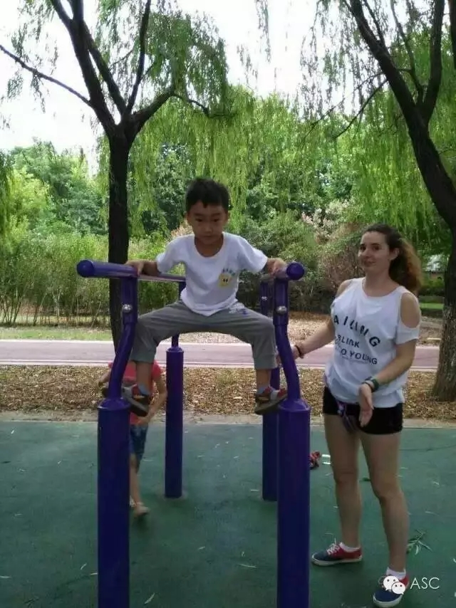
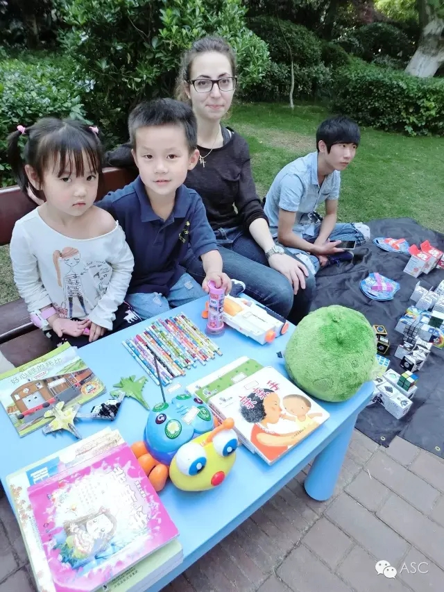

互惠动态
|
|
英语口语比初中生都厉害，5岁小女孩用的是这个方法！

如果在一年前，有人跟我说，五岁半的Gabrieller可以和老外用英语自由交流，可以自主阅读英文，我说什么都不会相信，但是在互惠生来到我们家庭半年以后，这些都在不经意间实现了。
如果在一年前，有人跟我说，五岁半的Gabrieller可以和老外用英语自由交流，可以自主阅读英文，我说什么都不会相信，但是在互惠生来到我们家庭半年以后，这些都在不经意间实现了。
作为一个上班族，我跟大多数家长一样，除了基本的英语启蒙外，并没有大把的时间和精力去研究和辅导，所以下意识中，就希望能有一种既省时省力又科学的方式培养孩子。
开始的时候，我给Gabrielle报了英语辅导班，但是一个班那么多学生，显然口语得到锻炼的机会不够，Gabrielle经常走神，积极性也不高，甚至有点厌学了，真是事倍功半！
之后，在一个偶然的机会中，我听朋友说互惠生：走进家庭，全天候陪伴孩子！既省时省力，又符合语言学习与应用的场景。刚好符合我的需求，所以，我很快就找了ASC国际互惠生中心，找了个荷兰互惠生Rindr。
平时，Rindr陪Gabrielle做游戏、讲故事、学外语，深得孩子的喜爱。自此，小Gabrielle的英语说的越来越溜了，从开始的一个个单词，到一句句话，每天都在进步着！
半年下来，效果也很显著：Gabrielle不仅能够和互惠生用英语自由交流，还从Rindr身上学到了很多西方文化的信息和思维！
对于我这种普通上班族来说，互惠生能够到家庭里来，全天候陪伴孩子，不仅效果显著，价格也很美丽哦：半年也就五万左右！真真是赚到了！

而结果也证明，这种边玩边学的方式确实要比“死磕”好很多，彼此交流学习，不仅提高了Gabrielle的英语口语水平，Rindr的中文也得到了提升，两全其美！ 相比传统的英语学习，来华互惠生让我眼前一亮：在学习英语的同时，又拓宽了国际视野。 全天候的陪伴，浸泡式的语言环境，给孩子营造了一个不得不说的英语环境。在平时，Rindr帮助Gabrielle一起阅读英文绘本，开始的时候Gabrielle只认识几个单词，慢慢地能理解一句话，现在一篇文章基本上都能够理解它所表达的意思。  自从Rindr来之后，我们有到草坪上开过Party，去探访过博物馆，学习了西餐礼仪，表演了英语剧......在这些现实生活场景中，Gabrielle通过英语，体验和创造了不一样的乐趣，也体验到不一样的文化魅力！ 

如果在一年前，有人跟我说，五岁半的Gabrieller可以和老外用英语自由交流，可以自主阅读英文，我说什么都不会相信，但是在互惠生来到我们家庭半年以后，这些都在不经意间实现了。